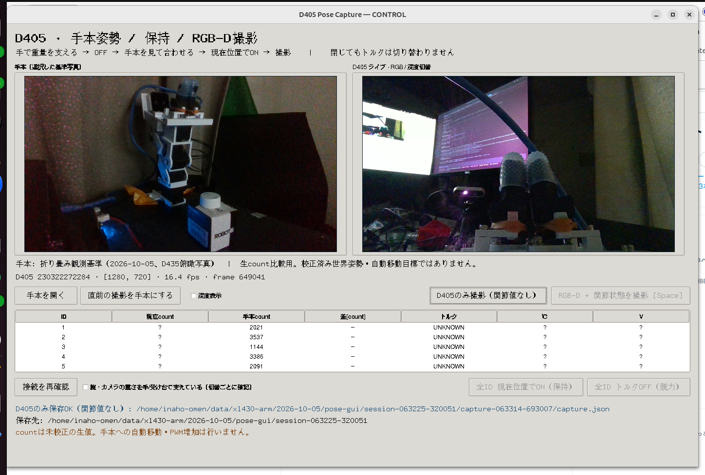
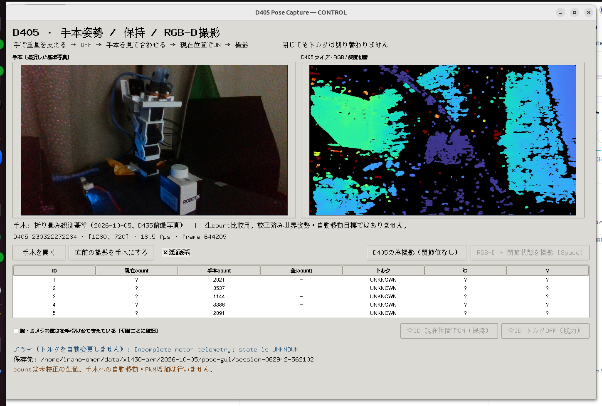
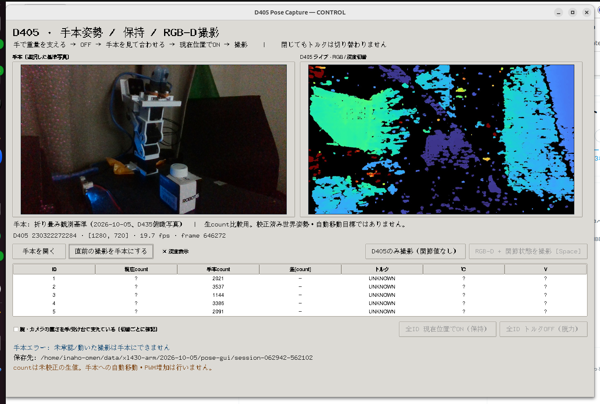
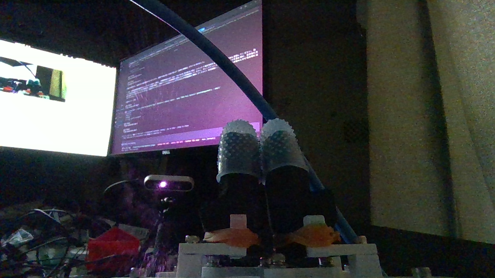
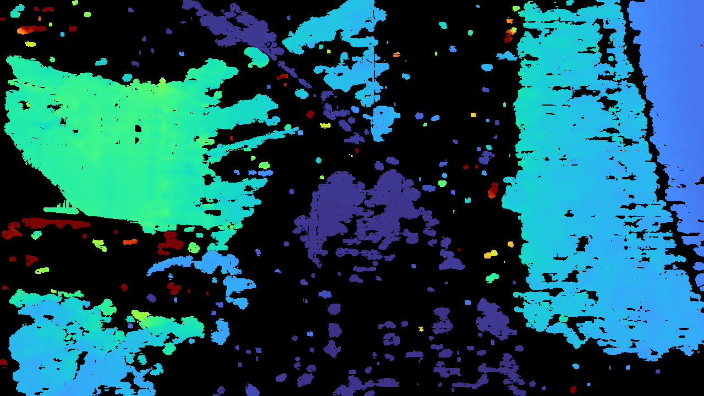

2026-10-05 / Codex単独。Tkinterで実装し、xdotoolで実画面を操作。起動・終了時の実機WRITEは0件。
実機ON/OFFは未検証。06:25の独立READ検査はID1〜5全台No PING response。原因、電源、現在のtorque状態は未確定。実D405撮影は明示したカメラのみモードで行い、関節値はnullとして保存した。





1280×720、raw depth uint16、depth scale約0.0001m/count。照明が弱く画像にノイズがある。撮影成功を把持成功・正解姿勢と扱わない。
撮影記録 / カメラパラメータ / raw depth / calibration
SDKエミュレータ4ケースPASS、ruff/ty PASS。支持なし拒否、現在count park、既ONの支持目標維持、初期RAM設定からのPWM下方制限、alias拒否、撮影bracket/動作/古いframeを確認した。
作業書 / 利用手順 / 実機READ・撮影・close記録
データ原本: ~/data/xl430-arm/2026-10-05/pose-gui/session-063225-320051/。GUIは電源/USB確認後「接続を再確認」、重さを支えてからトルクを手動切替する。